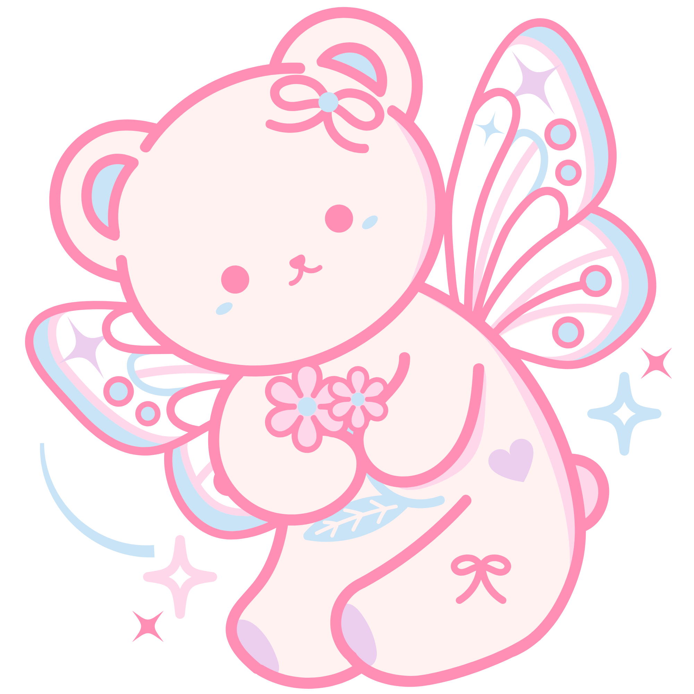

Hola, soy Agustina Bina, tengo 21 años y estudio
Licenciatura en Gestión Informática. Me apasiona la robótica, los animales y la cocina.
Soy
una persona inquieta que siempre busca aprender cosas nuevas y desafiarse.
Mi mundo gira en torno a mi perrito Ciro y mi pareja. Tengo una familia muuy extensa y un grupo de amigos que me acompaña hace casi 10 años.

Me encanta leer, escribir, cocinar y salir a caminar. Aunque jugué vóley e hice folklore,
hoy disfruto más de la cocina: tengo un pequeño emprendimiento de bombones artesanales
y siempre preparo la comida en los cumpleaños de mi familia y amigos.
Actualmente trabajo en marketing, buscando clientes y oportunidades.
Soy una persona ambiciosa y curiosa, me aburre la monotonía y siempre
busco entornos que me desafíen
para seguir creciendo y explorando nuevos proyectos.